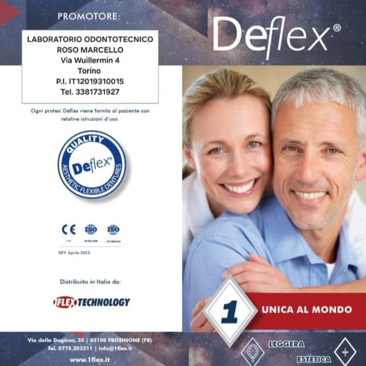
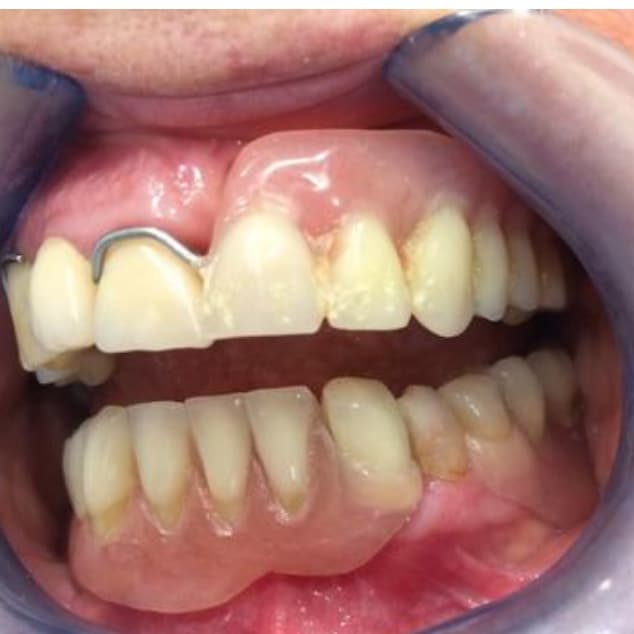
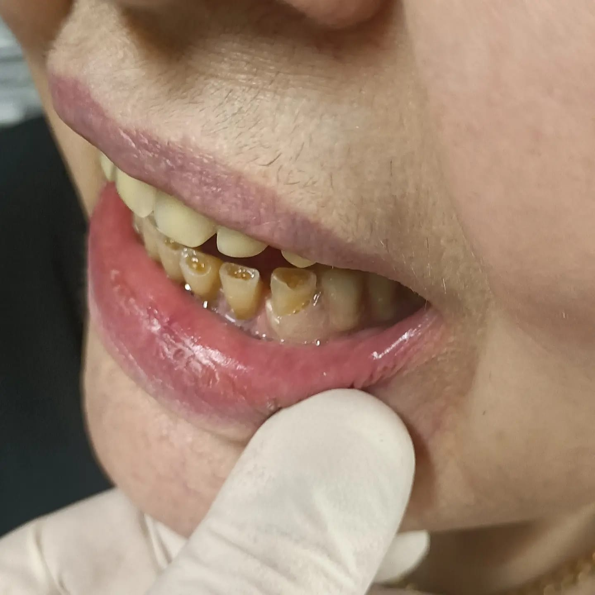
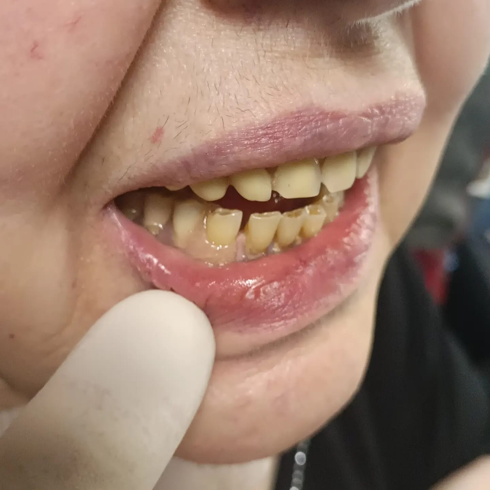
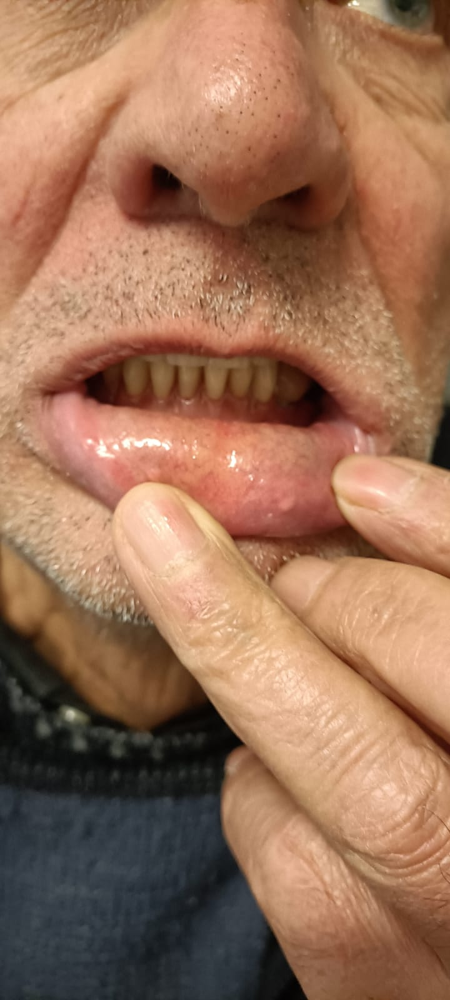
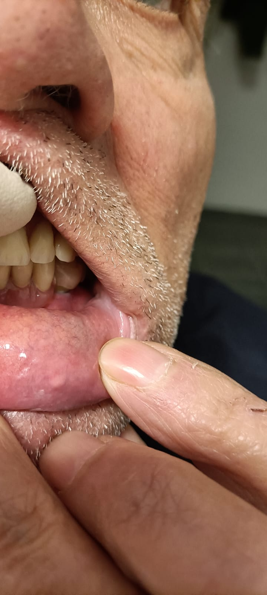
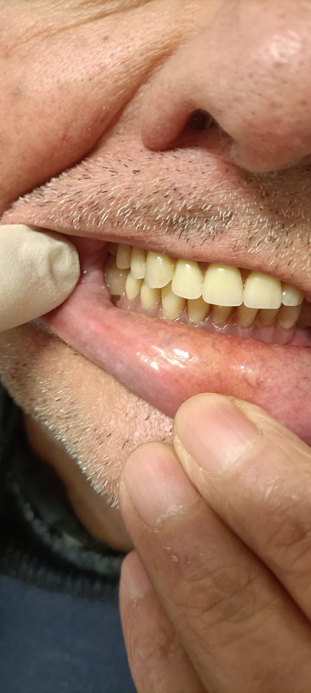

Ingegneria Protesica
al servizio dell'estetica.
Partner strategico per studi dentistici. Specializzazione certificata in sistemi Deflex®, protesi mobili e riabilitazioni fisse ad alta precisione.

Soluzioni Odontotecniche d'Eccellenza
Riabilitazioni Fisse
Corone e ponti estetici realizzati con precisione e materiali di alta qualità.
Protesi Mobili
Soluzioni confortevoli e personalizzate per ogni paziente.
Protesi Flessibili in Deflex
Siamo leader nella progettazione di manufatti flessibili: massima resilienza, biocompatibilità ed estetica superiore.
Assistenza Tecnica
Protocollo di service rapido per riparazioni e modifiche urgenti, garantendo continuità clinica al tuo studio.
Tecnologia e Tradizione
Il Laboratorio Odontotecnico Roso Marcello rappresenta un punto di riferimento a Torino per la precisione e la cura del dettaglio. Offriamo supporto professionale agli studi dentistici, integrando tecniche moderne e un’elevata specializzazione nelle protesi flessibili in Deflex, garantendo qualità, funzionalità ed estetica.

Casi Clinici & Workflow


Successi Clinici
La sinergia tra tecnico e clinico garantisce la piena soddisfazione del paziente finale.






Presenza sul Territorio
Indirizzo:
Corso Regio Parco, 168
10154 Torino (TO)
Contatto Professionale
Siamo pronti ad affiancare il tuo studio nella realizzazione di manufatti d'eccellenza. Contattaci per un primo colloquio conoscitivo o un preventivo tecnico.
Email: maecelloroso@libero.it
Telefono: 338 1731927
Sede: Corso Regio Parco, 168 - 10154 Torino (TO)
Contattaci su WhatsApp